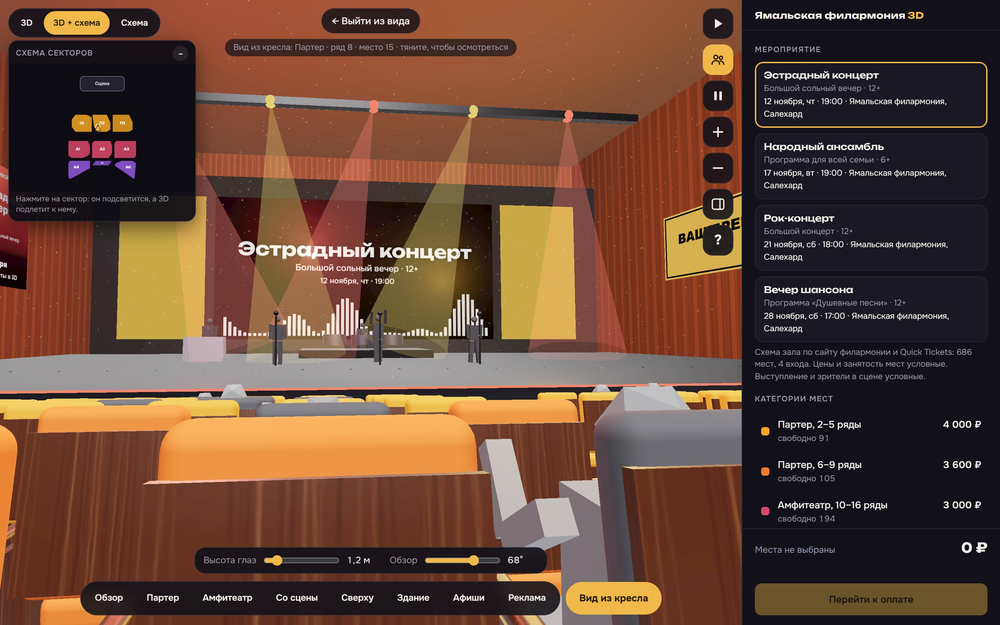

Театры и филармонии
Партер, амфитеатр, балконы и ложи: зритель садится в кресло и видит сцену, лица артистов и край сцены.
РЯДом: вид с места в зале, на арене и стадионе
Зритель выбирает кресло на 3D-схеме и видит сцену, экран или поле глазами сидящего: высоту ряда, угол, расстояние. Решение о покупке принимается быстрее и без звонка в кассу.
Главный вопрос покупателя

Как показываем
Партер, амфитеатр, балконы и ложи: зритель садится в кресло и видит сцену, лица артистов и край сцены.
Диваны, комфорт-ряды и обычные места с видом на экран: ракурс экрана с каждого ряда.
Сектора, ярусы и углы: вид на лёд, площадку и ворота. Режимы игры и концерта.
Трибуны, угловые и торцевые сектора: вид на поле и на сцену при концерте на стадионе.
Выбор нескольких мест подряд и подбор лучших мест для компании: компания видит одну и ту же сцену.
Цвет места показывает категорию и цену, а вид из кресла объясняет, за что зритель доплачивает.
Что важно знать
Вид с места строится по 3D-модели зала. Модель собирается по плану рассадки, фотографиям и размерам: высоте сцены, наклону зала, расстоянию между рядами, расположению балконов и колонн. Это геометрическая модель, а не фотография, поэтому она показывает реальное расположение мест и видимость сцены, но не заменяет фото и не передаёт мелкие детали отделки.
Чем точнее исходные материалы, тем точнее вид. Поэтому для запуска нужны схема рассадки (лучше в векторе), несколько фотографий зала и правила категорий. Если в зале есть особенности обзора, например колонна или перила яруса, мы показываем их в модели и вместе с вами проверяем несколько мест.
Зритель открывает вид из кресла двойным кликом по месту и может осмотреться, наклонить голову и приблизить сцену. Схема работает в браузере на телефоне и компьютере и не требует установки приложения. Примеры: демо залов, арен и стадионов.
Стоимость
Без комиссии с билетов. Цена за один зал при наличии пригодных планов и схем рассадки.
301–1 000 мест
490 000 ₽ создание, разово
+ подписка 60 000 ₽ в год · первый год 550 000 ₽
1 001–3 000 мест
790 000 ₽ создание, разово
+ подписка 96 000 ₽ в год · первый год 886 000 ₽
Зал до 300 мест (малые сцены) — тариф «Малый зал»: 150 000 ₽ создание и 36 000 ₽ подписка в год.
Как это происходит
FAQ
Откройте 3D-схему зала на сайте площадки и сядьте в нужное кресло: двойной клик по месту показывает сцену с этой точки. Если у площадки такой схемы нет, площадка может подключить её через «РЯДом».
Мы строим 3D-модель трибун по схеме секторов. Болельщик выбирает сектор, ряд и место и видит поле или лёд из этой точки. Для стадионов и арен есть режимы матча и концерта.
Модель строится по плану, высоте и размерам зала, поэтому видимость сцены показана правдоподобно. Это не фотография. Точность зависит от исходных материалов: схемы рассадки, фото и размеров. Ключевые места мы проверяем вместе с площадкой.
Зритель увереннее выбирает место, когда видит обзор, а вопросы о видимости перестают уходить в кассу. Процент роста продаж мы не обещаем: он зависит от площадки, афиши и цен.
Нет. Схема работает поверх вашей билетной системы, заказ возвращается в неё. Комиссию с билетов мы не берём.
Создание модели разово и подписка на год: от 150 000 ₽ и 36 000 ₽ в год для зала до 300 мест. Полный прайс по размерам залов указан выше.
Оставьте контакты: бесплатно соберём превью вашего зала с видами из нескольких мест и покажем его на онлайн-встрече на 15 минут, а коммерческое предложение откроется сразу. Договор и оплата — только если вам понравится.
+7 916 422-32-88 · info@3dryad.ru